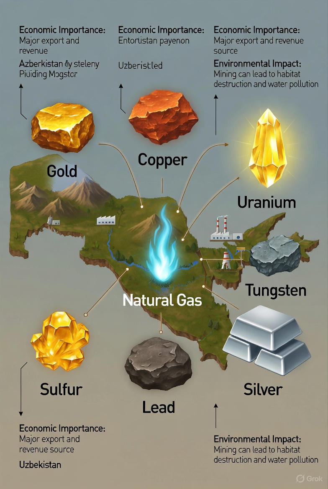

O'zbekistonning Foydali Qazilmalari
1.1. Foydali qazilmalar va ularning iqtisodiy ahamiyati
O'zbekiston Respublikasi o'zining boy mineral xom-ashyo resurslari bilan dunyoda muhim o'rin tutadi.
Yer osti boyliklari mamlakat iqtisodiyotining asosiy tayanchlaridan biri bo'lib, sanoatning ko'plab tarmoqlarini xom-ashyo bilan ta'minlaydi va eksport salohiyatini belgilaydi.
Asosiy foydali qazilmalarga oltin, mis, uran, tabiiy gaz, volfram, kumush, qo'rg'oshin, rux va boshqalar kiradi.

Biroq, bu boyliklardan foydalanish atrof-muhit uchun jiddiy ekologik bosimni yuzaga keltiradi. Shu sababli, kon-sanoati faoliyatini atrof-muhit muhofazasi choralari bilan uyg'unlashtirish barqaror rivojlanishning asosiy shartidir.
1.2. Foydali qazilmalardan foydalanish jarayonida atrof-muhitga ta'sir
- Litosferaga ta'siri (Yer qobig'i):
- Landshaftning buzilishi: Ochiq usulda kon qazish natijasida ulkan karyerlar, chiqindi jinslar uyumlari hosil bo'ladi, bu esa tabiiy landshaftni butunlay o'zgartiradi.
- Tuproq ifloslanishi va eroziyasi: Kon atrofidagi hududlar og'ir metallar, kimyoviy reagentlar va neft mahsulotlari bilan ifloslanadi. O'simlik qoplamining yo'q qilinishi tuproq eroziyasini kuchaytiradi.
- Atmosferaga ta'siri:
- Chang va gazlar: Portlatish, qazish, tashish va qayta ishlash jarayonlarida atmosferaga katta miqdorda chang, oltingugurt dioksidi, uglerod oksidi, azot oksidlari kabi zaharli gazlar chiqariladi.
- Gidrosferaga ta'siri:
- Suv resurslarining ifloslanishi: Konlardan oqib chiquvchi suvlar, boyitish fabrikalarining oqovalari daryo va yer osti suvlarini og'ir metallar, kislotalar va boshqa zaharli moddalar bilan ifloslantiradi.
- Gidrologik rejimning o'zgarishi: Karyerlardan grunt suvlarini chiqarib tashlash natijasida hududning gidrologik balansi buziladi.
1.3. Mineral xom-ashyo resurslaridan majmuali foydalanish
Bu tamoyil qazib olingan xom-ashyoning barcha tarkibiy qismlaridan maksimal darajada foydalanishni, chiqindilarni kamaytirishni va ishlab chiqarishning ekologik samaradorligini oshirishni nazarda tutadi.
- Asosiy mineral bilan birga uchraydigan yo'ldosh komponentlarni (masalan, mis rudasidan oltin, kumush, selen, tellurni ajratib olish) ajratib olish.
- Kon chiqindilarini (otvallar, shlaklar) qurilish materiallari, yo'l qurilishi va boshqa sohalarda xom-ashyo sifatida ishlatish.
- Suvdan aylanma tarzda foydalanish tizimini joriy etish.